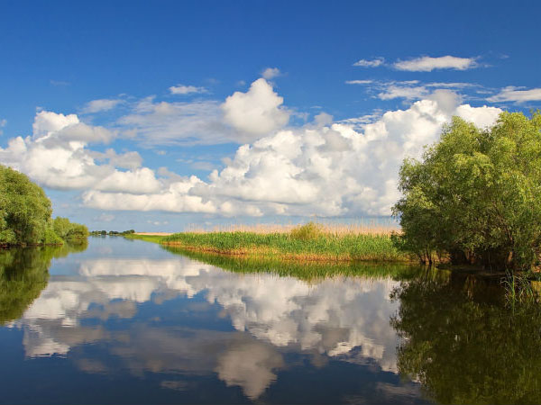

 Це територія з надзвичайно унікальним кліматом. Тут чиста вода, а навкруги зелені вербові й очеретяні джунглі. Основною особливістю заповідника є його острови, які стали домівкою для багатьох видів тварин та рослин. Під час прогулянки піщаним пляжем Дунайського заповідника, пможна зустріти дельфінів, буйволів, диких коней та понад 70% видів птахів, які живуть в Україні. Головною окрасою заповідника є рожеві пелікани. А ще тут зберігся рідкісний нерест білуги, севрюги та осетрів. Загалом, заповідник охороняє 138 червонокнижних тварин та 26 видів рослин.
Джерело:https://wownature.in.ua/
Одеський національний академічний театр опери та балету — найстаріший оперний театр України. Найкращий театр Одеси та України на момент побудови. Будинок зведено 1887 року під керівництвом архітекторів Фердинанда Фельнера і Германа Гельмера у стилі віденського бароко. Мабуть, у жодному театрі немає виготовленої з таким смаком завіси, ескіз якої створив найбільший театральний художник А. Головін. Площа сцени 500 кв.метрів. Унікальна акустика дозволяє доносити навіть шепіт з сцени в будь-якій куточку залу. Одна з визначних пам’яток театру залу – люстра. Півтори тонни – такою була вага старої люстри. Дві тонни двісті кілограм – вага нинішньої. Вона – точна копія, яка прикрасила зал нового театру в 1887 році. А важче тому, то виготовлена з міцніших і важчих сплавів.
Джерело:https://7chudes.in.ua/,https://uk.wikipedia.org/
 Аккерманська фортеця знаходиться в 70 кілометрах від Одеси і є історичним центром Білгорода-Дністровського.
Місто століттями залишалося важливим оборонним і політичним центром в складі ряду держав. У XIV столітті на залишках античного міста Тіра
була зведена фортеця, покликана зміцнити кордони Молдавського князівства. Ідея виявилася вдалою. Наприклад, тільки в XV столітті війська
Османської імперії тричі штурмували стіни фортеці – раз по раз безуспішно. Під її стіни водили козаків відомі отамани: Е. Дашкевич, І.
Покотило, Г. Лобода, І. Сірко. Пізніше фортеця втратила свій статус військового об’єкту. Особливість споруди в тому, що вона зведена на скелі.
З північної сторони об стіни хлюпається Дністровський лиман, з інших трьох фортецю опоясує рів. Зв’язок з містом здійснювався по підйомному мосту
через Кілійські ворота, які тепер служать головним входом. З висоти замок являє собою багатокутник з вежами по кутах. Площа території – понад 9
гектарів. Загальна довжина стін перевищує два кілометри, а їх товщина сягає п’яти метрів. До сих пір збереглися 26 з 34 фортечних башт. Територія
розділена на чотири двори. Перший двір – Цивільний – був забудований одноповерховими будинками і служив городянам притулком під час нападу ворога.
Другий двір – Гарнізонний, в ньому дислокувалися війська. Серцем фортеці була цитадель або «Генуезький замок», в якому розташовувався пункт
командування.
Аккерманська фортеця знаходиться в 70 кілометрах від Одеси і є історичним центром Білгорода-Дністровського.
Місто століттями залишалося важливим оборонним і політичним центром в складі ряду держав. У XIV столітті на залишках античного міста Тіра
була зведена фортеця, покликана зміцнити кордони Молдавського князівства. Ідея виявилася вдалою. Наприклад, тільки в XV столітті війська
Османської імперії тричі штурмували стіни фортеці – раз по раз безуспішно. Під її стіни водили козаків відомі отамани: Е. Дашкевич, І.
Покотило, Г. Лобода, І. Сірко. Пізніше фортеця втратила свій статус військового об’єкту. Особливість споруди в тому, що вона зведена на скелі.
З північної сторони об стіни хлюпається Дністровський лиман, з інших трьох фортецю опоясує рів. Зв’язок з містом здійснювався по підйомному мосту
через Кілійські ворота, які тепер служать головним входом. З висоти замок являє собою багатокутник з вежами по кутах. Площа території – понад 9
гектарів. Загальна довжина стін перевищує два кілометри, а їх товщина сягає п’яти метрів. До сих пір збереглися 26 з 34 фортечних башт. Територія
розділена на чотири двори. Перший двір – Цивільний – був забудований одноповерховими будинками і служив городянам притулком під час нападу ворога.
Другий двір – Гарнізонний, в ньому дислокувалися війська. Серцем фортеці була цитадель або «Генуезький замок», в якому розташовувався пункт
командування.
Джерело:http://akkerman-fort.com/
 Балта – районний центр із населенням у 18 тисяч осіб. Маленьке місто з великою історією. Почалося все з невеличкої турецької фортеці,
містечко навколо якої пережило чимало війн та набігів, а у 1776 році отрмиало магдебурзьке право. У 1793 році воно відійшло до Російської імперії
, потім – національно-визвольні повстання. У 1925-1928 рр. Балта була столицею Молдавської Автономної Радянської Соціалістичної Республіки, а з
1940 р. Балтский район відійшов до Одеської області УРСР. Відомі пам’ятки цього міста: православний собор, старообрядницькі церкви, польський
костел, пожежна каланча (1929), будівля педагогічного училища (колишній замок 18 ст.), будівлі колишнього монастиря (нині спортивна школа та
військовий госпіталь),Балтські кладовища (найстаріші пам’ятники – 18-19 століть), старовинна забудова подільського містечка (поступово
зникаюча) і багато іншого.
Балта – районний центр із населенням у 18 тисяч осіб. Маленьке місто з великою історією. Почалося все з невеличкої турецької фортеці,
містечко навколо якої пережило чимало війн та набігів, а у 1776 році отрмиало магдебурзьке право. У 1793 році воно відійшло до Російської імперії
, потім – національно-визвольні повстання. У 1925-1928 рр. Балта була столицею Молдавської Автономної Радянської Соціалістичної Республіки, а з
1940 р. Балтский район відійшов до Одеської області УРСР. Відомі пам’ятки цього міста: православний собор, старообрядницькі церкви, польський
костел, пожежна каланча (1929), будівля педагогічного училища (колишній замок 18 ст.), будівлі колишнього монастиря (нині спортивна школа та
військовий госпіталь),Балтські кладовища (найстаріші пам’ятники – 18-19 століть), старовинна забудова подільського містечка (поступово
зникаюча) і багато іншого.
Джерело:https://7chudes.in.ua/
Сторінку розробила: Малашта Діана